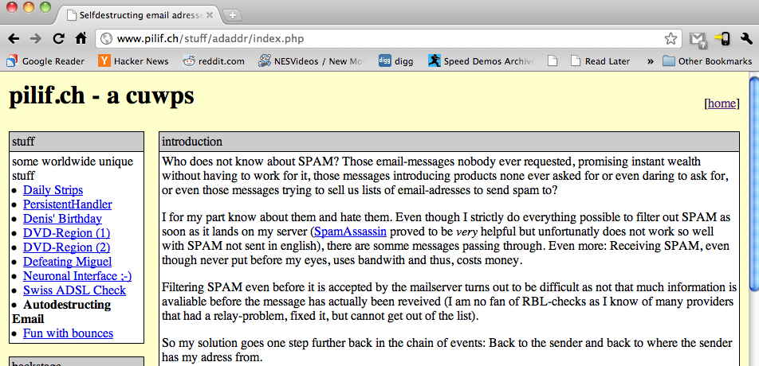
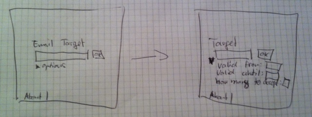
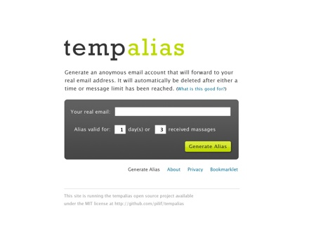
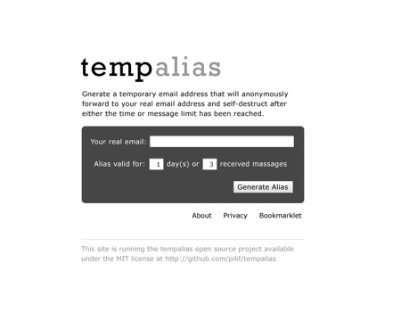
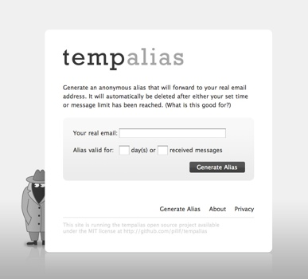
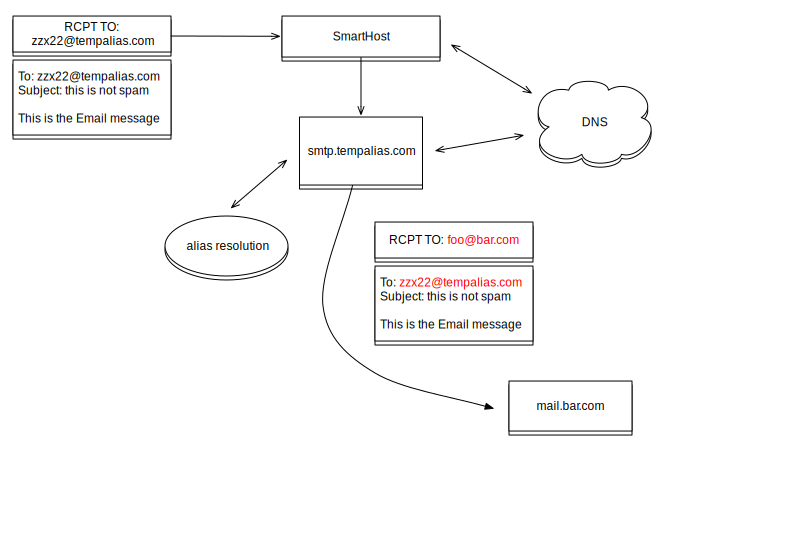
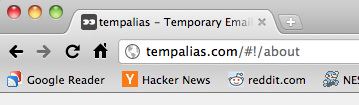
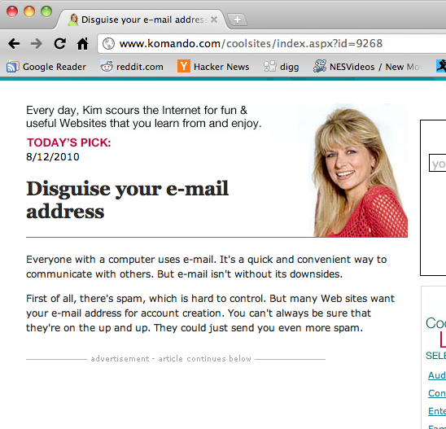

Using node.js in production: tempalias.com
Philip Hofstetter
About me
- co-founder of Sensational AG in Switzerland
- usually working on boring enterprisey stuff
- huge fan of JavaScript and Email routing
- (and character sets, but that's for another talk)
- follower whore, so go ahead and follow: @pilif
tempalias.com
- let's live our enthusiasm for JS and build something useful. Make it be email related.
- fulfill a dream from 2002

- create temporary email aliases that expire after some amount of received mail or time
- renewed enthusiasm for idea after listening to security now #242
Demo time
requirements
- service must be useful for anybody
- must be free software (MIT license)
- it should look nice
- should be accessible to developers (as self-contained as possible)
- must be built upon new stuff as learning is fun
making it look nice
easy if you have a friend who understands design.




huge thanks to Richard Haydon
how email works
Basically just like your everyday letter
- Message itself has header and body
- Message is put into an envelope
- MTAs never* touch the message, but always work with the envelope
- MUAs (your mail client) don't (can't) look at the envelope but always look at the message
* let's ignore the Received header or 8bitmime this time around.
how tempalias works

keeping it accessible
Despite the complexity, everybody should be able to toy with this
- no mail server plugin (portability, cost of forking just for denial)
- no complicated external dependencies
- clone and run!
There's only one option: Build an SMTP proxy (and the web service of course)
smtp proxy
- Uses smarthost for final delivery (sparing me to do queue, NDR, etc)
- First connected on client HELO
- That design is stupid because tempalias is about rejecting mail
- Now connecting only after successful alias resolution
- All errors (connection or otherwise) yield 500 to incoming client.
persistence
- SQL is overkill. Key/Value is enough
- Ironically, when I did this, SQLite was the only non-home-grown embedded solution
- Wanted to learn key/value stores, so went with redis
alias generation
- UUIDs would be cool. But too long. Even base32 encoded (~20 chars)
- Generating random strings now.
- On collision, expand all future aliases by one characer in lengths (32x the keyspace)
- SETNX reservations:alias-id to make sure it's free
- We started at 4 chars, now at 6
- Never reuse an alias
alias removal
AliasProvider.findById() doesn't find expired aliases- cron job purges expired aliases every 30 minutes in accordance to privacy policy
- Not keeping a list of active aliases, so cleanup does get alias:* which is slow
- reservations are never deleted
give me code!
You are right - this is looking like a sales pitch - we are coders. Dammit.
dependencies
tempalias uses some external libraries (using git submodules)
- node-paperboy (fixed some bugs, accepted upstream)
- redis-node-client (great discussion with author. Patches rejected, fixed in a better way)
- node-smtp (made server work. Made client work with chunks. No upstream interest in fixes
due to pending rewerite)
It's a good idea to clone your dependencies and use your clone as the submodule source. You will make
modifications to your clones!
web service
- Frontend is static HTML plus client-side JS. No single byte is dynamically generated
- The frontend uses the API (which anybody else can use too)
- No need to "bolt on" an API. Either it provides the needed feature or the service doesn't work
- All frontend-code done using Sammy and templates.
- Be RESTful or die
web framework
Began development using express. Since thrown away, replaced by own code and paperboy
- Express is very good at filling HTML templates
- It adds its own DSL
- It's really bad at just serving static files
- What I wanted was the reverse: Good at static HTML and close to pure node
web service
While it's really cool, sometimes generated HTML can still be useful
- Making the site crawlable is extra work (why the !? Google? Why?) 
- Sometimes knowing the hostname inside the JS/HTML can be helpful
awesome node
- On this machine here (17" MBP): 1500 alias generations/s. 3000 lookups
- In my day job I'm happy with 50 r/s and was blown away 800 r/s in a Hello World test in mod_wsgi
- Could easily handle reddit and HN
bookmarklet
- no chance doing this without jQuery
- Our bookmarklet runs in the context of the parent page.
- No pollution of global namespace
- We still need jQuery
- jQuery could already be available. No need to load it twice
- Cross domain restrictions force us to do JSONp (which isn't RESTful)
bookmarklet
Check if we were already loaded, otherwise, inject a script tag.
Note how I have to pass the hostname as part of the bookmarklet as the injected
script is static JS and doesn't know the hostname (and I don't want to hardcode it)
(function(){
var c = {h: 'localhost:8080', d:1, t:'pilif@gnegg.ch', u:2};
if (window.$__tempalias_com){
window.$__tempalias_com(c);
}else{
var s=document.createElement('script');
s.src='http://localhost:8080/bookmarklet.js';
s.onload = function(){
window.$__tempalias_com(c);
};
document.getElementsByTagName('head')[0].appendChild(s);
}
})();
bookmarklet
Use jQuery if the one we want is already there. Otherwise, carefully load our own
(function(){
var ta_jquery = undefined;
var bm = function(adata){
var tempalias = function($){ }
if (ta_jquery){
tempalias(ta_jquery);
}
if (window.jQuery && (window.jQuery().jquery == '1.4.2')){
ta_jquery = window.jQuery;
tempalias(ta_jquery);
}else{
(function(){
var old_jQuery = window.jQuery;
var conflictProtect = (typeof window.$=='function');
var s = document.createElement('script');
s.setAttribute('src','http://ajax.googleapis.com/ajax/libs/jquery/1.4.2/jquery.min.js');
s.onload = function(){
ta_jquery = window.jQuery;
if (conflictProtect)
ta_jquery.noConflict();
window.jQuery = old_jQuery;
tempalias(ta_jquery);
};
document.getElementsByTagName('head')[0].appendChild(s);
}());
}
};
window.$__tempalias_com = bm;
}());
@brainlock who sits in the audience could tell you a story of what can happen if you inject
into the global namespace
and then, this happened

SPAM prevention
- doing RBL checks (downstream can't do them)
- rate limit
- don't trust tempalias upstream on smarthost (sa_exim, sender verification)
production use
- web service behind nginx (for compression - static files served by paperboy for out-of-the-boxyness)
- SMTP on port 2525 (I'm not running my very first node app as root)
- Using iptables and mark extension to make it appear to run at port 25
we still went down
- File handle starvation is a real issue
- not closing files in paperboy, smtp-client, smtp-server
- Exception handling with nested anonymous functions is impossible
- Handle all errors right as they occur to minimise resource starcvation
- unfortunately, we still leak sockets
$ lsof -p 14749 | grep WAIT | wc -l
169
after a week - so it's much better.
Outlook
- getting contributors (*cough*)
- fix leaks
- custom domains (see
ownmx branch for crude solution)
- reply-to munging for full anonymization
and now hurry and follow @pilif